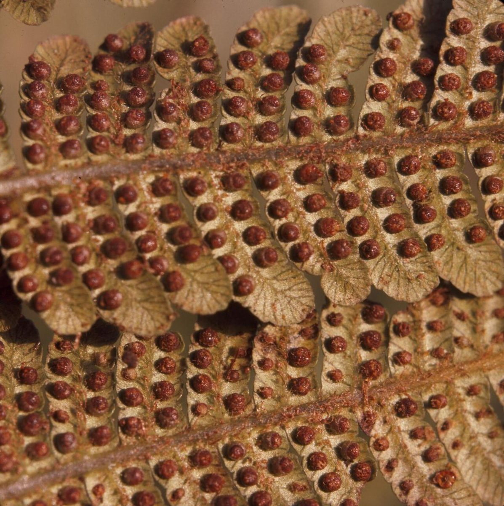
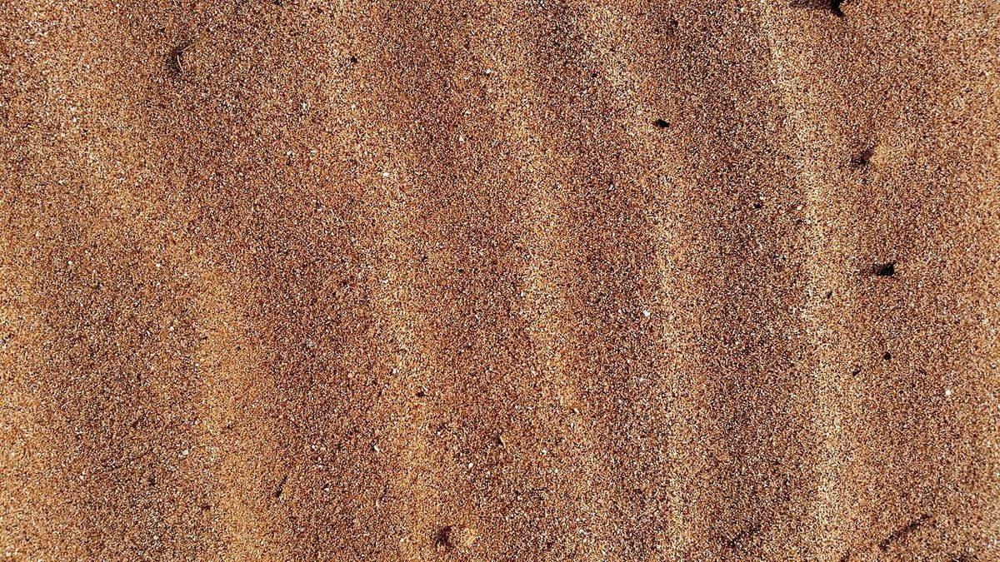

パレオ
CAFE / FUKUI-SHI
PALEO
BREW
CAFE
福井県福井市のカフェ「Paleo Brew Cafe」のご案内ページです。営業時間やメニューなど、詳しいことは準備中。まずはInstagramをのぞいてみてください。

制作側の連想(お店の理念・由来とは無関係)
「Paleo」と「Brew」から、地層の帯を。
店名の由来は分かりません。制作側は「Paleo」という響きから「古い時代」を、「Brew」から「淹れる・抽出する」を連想し、いちばん古い層から新しい層へ順に読んでいく「地質年代の帯」の作りにしました。下の五つの層は、古い順にシダ・石・砂と土・貝、そして最後に豆です。お店の考えとは関係のない、制作側の連想です。
層1いちばん古い
シダの層
いちばん古い層に置いたのは、シダの葉です。裏にならぶ茶色の粒や、巻いた若芽もいっしょに並べました。


層2
石の層
その上に、黒っぽい岩のかけらと、水にぬれた小石を重ねました。


層3
砂と土の層
さらに上へ、風の筋が残るような砂と、しっとりした土の面を。


層4
貝の層
貝殻のつやと重なりを、この層の目印にしました。


層5いちばん新しい
豆の層
いちばん上の層は、コーヒー豆です。古い層をたどってきて、最後に一杯の「淹れる」にたどり着く、という並びです。

ご案内
お店のこと(確認できたものだけ)
| 所在地 | 〒910-0006 福井県福井市中央１丁目３−１ |
|---|---|
| 電話 | なし |
| 営業時間 | 準備中 |
| 定休日 | 準備中 |
| ご予約 | 準備中 |
| 駐車場 | 準備中 |
| SNS | Instagram @brewcafe00 |